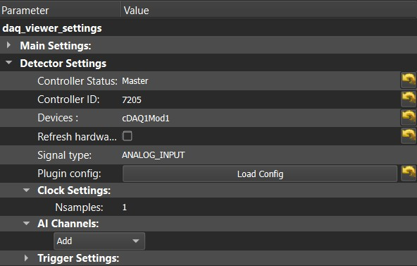
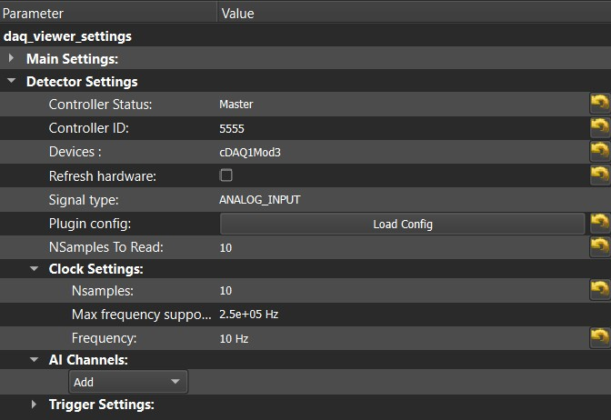
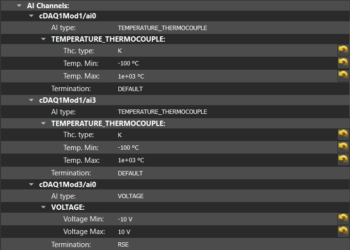

NIDAQmx viewer
This plugin is meant to be used to make measurement and acquire analog data with a NI card. According to the material used, a lot of physical quantity can be detected. Until August 2025, you can measure temperatures, currents or voltages.
Note
Stay aware of the maximum quantity measurable which depends on what can supports your device.
It was tested with a cDAQ-9174 and a USB-6341 with modules NI-9205, NI-9211 and NI 9217.
Global Configuration
To use this plugin, you need to provide some parameters, or at least be aware of the default settings. Refer to their description below and the examples given for both 0D and 1D configuration.
Devices: The device you want to use among each detected device. It can be the whole cDAQ, such as
cDAQ[X], or a specific module, such ascDAQ[X]Mod[Y].Signal type: the type of measurement you want to make (mostly ANALOG_INPUT since digital measurements are not supported yet and output signals do not concern viewers but daq_move).
Plugin config: A push button (which disappear when used) loading a specific configuration set by the user. It aims to prevent from multiple channel entry each time the plugin is loaded. It is very useful in the case of setups including many modules / channels, for exemple with one experimental bench being used for multiples measurement campaigns. To make your configuration, refer to the example shown in the file
C:\ProgramData\.pymodaq.\config_daqmx.tomland fill the fileC:\Users\<user>\.pymodaq.\config_daqmx.tomlwith your own material (syntax needs to be respected to prevent from errors).
0D Configuration
The goal of 0D acquisition is to display each data in live and keep the graphical history. It is sometimes necessary to control visually some quantity, for example for security reasons.
Clock Settings - Nsamples: Fixed to 1
{kind=link}

1D Configuration
The goal of 1D acquisition is to get data with an optimal use of the hardware capacity. Data are acquired in the hardware buffer first and then transmitted to PyMoDAQ, which display each array of data received, hence the use of the 1D viewer.
NSamples To Read: the number of samples displayed by the viewer
Clock Settings - Nsamples: The number of samples requested to the material for each channel
Clock Settings - Frequency: the acquisition rate, which is common for each acquisition channel.
{kind=link}

Channels Configuration
Last but not least, the channels section of the parameters tree contains each analog measurement you will process. If you clicked on the load config button, the channels from the .toml configuration file are displayed here. You can also generate directly the channels you want to use, selecting the id corresponding the the physical channel your sensor is plugged-in, and choosing the type of your analog input. Below are some examples of channels that can be used with this plugin.
AI Channels: the channel(s) you will use for your analog measurements, something like
cDAQ[X]Mod[Y]/ai[Z]. You can generate it directly or load it automatically using the plugin config. Pay attention not creating the same channel twice!
{kind=link}

Use
It works as a usual viewer plugin, acquiring data on each channels at the configured rate.
If you encounter some problems, you might get some warnings or errors in the log, check it to get some hints to solve it.
You can run Get-Content .pymodaq\log\pymodaq.log -Tail 10 -Wait in the PowerShell to display the log in real time.